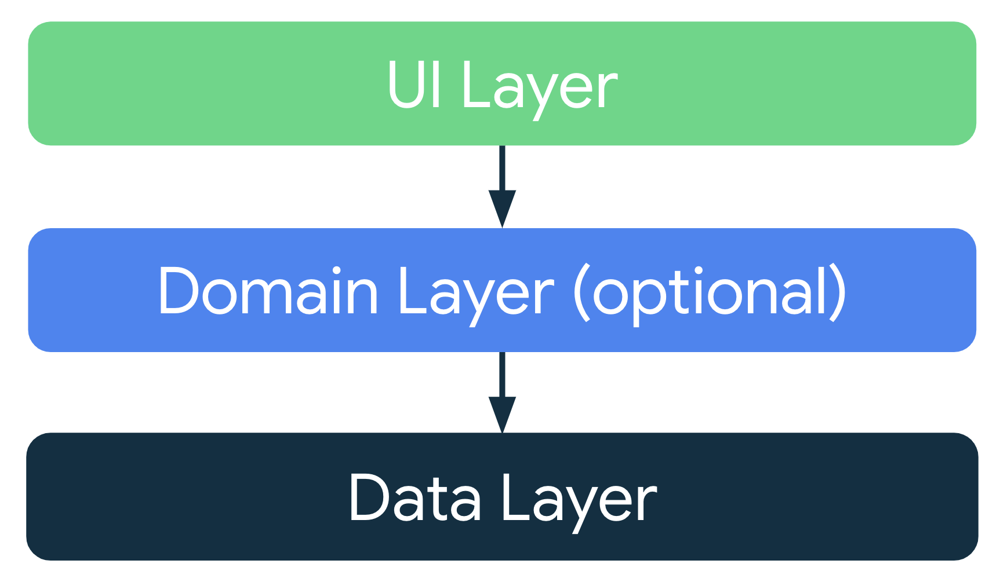
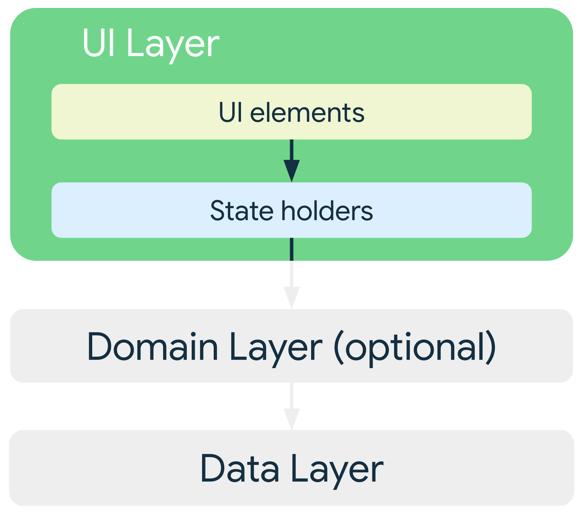
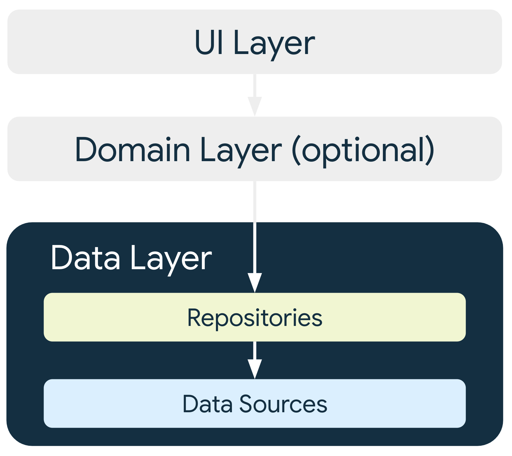
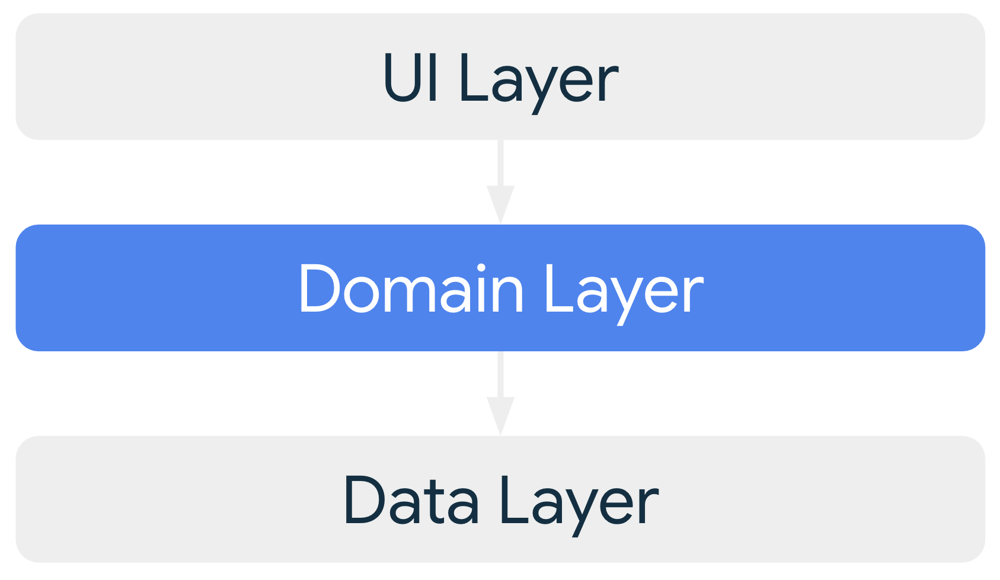

App architecture is the foundation of a high-quality Android application. A well-defined architecture lets you create a scalable, maintainable app that can adapt to the ever-expanding ecosystem of Android devices, including phones, tablets, foldables, ChromeOS devices, car displays, and XR.
App composition
A typical Android app is composed of multiple app components, such as services, content providers, and broadcast receivers. You declare these components in your app manifest.
The user interface of an app is also a component. Historically, UIs were built
using multiple activities. However, modern apps use a
single-activity architecture. A single Activity serves as a container for
screens or Jetpack Compose destinations.
Multiple form factors
Apps can run on multiple form factors, including not just phones, but also tablets, foldables, ChromeOS devices, and more. Don't assume that your app always stays fixed in a portrait or landscape orientation. Configuration changes, such as device rotation or folding and unfolding a foldable device, force your app to recompose its UI, which affects app state.
Resource constraints
Mobile devices—even large screen devices—are resource constrained, so at any time, the operating system might stop your app process to give its resources to other processes.
Variable launch conditions
In a resource-constrained environment, the components of your app can be launched individually and out of order; what's more, the operating system or user can destroy them at any time. As a result, don't store any application data or state in your app components. Make your app components self-contained, independent of each other.
Common architectural principles
If you can't use app components to store application data and state, how should you design your app?
As Android apps grow in size, it's important to define an architecture that lets the app scale. A well-designed app architecture defines the boundaries between parts of the app and the responsibilities each part has.
Separation of concerns
Design your app architecture to follow a few specific principles.
The most important principle is separation of concerns: separating your app into methods, classes, files, packages, modules and layers that have clearly defined responsibilities and boundaries.
It's a common mistake to write all your code in an Activity.
The primary role of an Activity is to host your app's UI. The
Android OS controls their lifecycle, frequently destroying and recreating them
in response to user actions like screen rotation or system events like low
memory.
This ephemeral nature makes them unsuitable for holding application data or
state. If you store data in an Activity, that data is lost when
the component is recreated. To ensure data persistence and provide a stable user
experience, don't entrust state to these UI components.
Adaptive layouts
Build apps that gracefully handle configuration changes, such as device orientation changes or changes in the size of the app window. Implement the adaptive canonical layouts to provide an optimal user experience on a variety of form factors.
Drive UI from data models
Another important principle is to drive your UI from data models, preferably persistent models. Data models represent the data of an app. They're independent from the UI elements and other components in your app. This means that they are not tied to the UI and app component lifecycle but will still be destroyed when the OS removes the app's process from memory.
Persistent models are ideal for the following reasons:
Users don't lose data if the Android OS destroys your app to free up resources.
Your app continues to work in cases when a network connection is intermittent or unavailable.
Base your app architecture on data model classes to make your app robust and testable.
Single source of truth
When a new data type is defined in your app, assign a single source of truth (SSOT) to it. The SSOT is the owner of that data, and only the SSOT can modify or mutate it. To achieve this, the SSOT exposes the data using an immutable type; to modify the data, the SSOT exposes functions or receives events that other types can call.
This pattern has multiple benefits:
- Centralizes all changes to a particular type of data in one place
- Protects the data so that other types cannot tamper with it
- Makes changes to the data more traceable, so bugs are easier to spot
In an offline-first application, the source of truth for application data is
typically a database. In some other cases, the source of truth can be a
ViewModel.
Unidirectional data flow
The single source of truth principle is often used with the unidirectional data flow (UDF) pattern. In UDF, state flows in only one direction, typically from parent component to child component. The events that modify the data flow in the opposite direction.
In Android, state or data usually flow from the higher-scoped types of the hierarchy to the lower-scoped ones. Events are usually triggered from the lower-scoped types until they reach the SSOT for the corresponding data type. For example, application data usually flows from data sources to the UI. User events such as button presses flow from the UI to the SSOT where the application data is modified and exposed in an immutable type.
This pattern better maintains data consistency, is less prone to errors, is easier to debug, and provides all the benefits of the SSOT pattern.
For more information about UDF, see Unidirectional data flow in Jetpack Compose.
Recommended app architecture
Considering common architectural principles, design each application with at least two layers:
- UI layer: Displays application data on the screen
- Data layer: Contains the business logic of your app and exposes application data
You can add an additional layer called the domain layer to simplify and reuse the interactions between the UI and data layers.

Modern app architecture
A modern Android app architecture uses the following techniques (among others):
- Adaptive and layered architecture
- Unidirectional data flow (UDF) in all layers of the app
- UI layer with state holders to manage the complexity of the UI
- Coroutines and flows
- Dependency injection best practices
For more information, see Recommendations for Android architecture.
UI layer
The role of the UI layer (or presentation layer) is to display the application data on screen. Whenever the data changes, either due to user interaction (such as pressing a button) or external input (such as a network response), the UI updates to reflect the changes.
The UI layer comprises two types of constructs:
- UI elements that render the data on the screen. You build these elements using Jetpack Compose functions to support adaptive layouts.
- State holders (such as
ViewModel) that hold data, expose it to the UI, and handle logic. State holders should live for the same duration as the UI element they are providing state for. For example, a ViewModel for a screen should be retained in memory until the screen is removed from the app's navigation back stack. For more information, see State Lifespans.

For adaptive UIs, state holders such as ViewModel objects expose UI state that
adapts to different window size classes. You can use
currentWindowAdaptiveInfo() to derive this UI state. Components like
NavigationSuiteScaffold can then use this information to automatically switch
between different navigation patterns (for example, NavigationBar,
NavigationRail, or NavigationDrawer) based on the available screen space.
To learn more, see UI layer and Compose UI Architecture.
For more information, about adaptive apps and navigation, see Build adaptive apps and Build adaptive navigation.
Data layer
The data layer of an app contains the business logic. Business logic is what gives value to your app—it comprises rules that determine how your app creates, stores, and changes data.
The data layer is made up of repositories, each of which can contain zero to
many data sources. Create a repository class for each different type of
data you handle in your app. For example, you might create a MoviesRepository
class for data related to movies or a PaymentsRepository class for data
related to payments.

Repository classes are responsible for the following:
- Exposing data to the rest of the app
- Centralizing changes to the data
- Resolving conflicts between multiple data sources
- Abstracting sources of data from the rest of the app
- Containing business logic
Each data source class has the responsibility of working with only one source of data, which can be a file, a network source, or a local database. Data-source classes are the bridge between the application and the system for data operations.
To learn more, see the data layer page.
Domain layer
The domain layer is an optional layer between the UI and data layers.
The domain layer is responsible for encapsulating complex business logic or simpler business logic that is reused by multiple view models. The domain layer is optional because not all apps have these requirements. Use it only when needed - for example, to handle complexity or favor reusability.

Classes in the domain layer are commonly called use cases or interactors.
Each use case has responsibility for a single functionality. For
example, your app could have a GetTimeZoneUseCase class if multiple view
models rely on time zones to display the proper message on the screen.
To learn more, see the domain layer page.
Manage dependencies between components
Classes in your app depend on other classes to function properly. You can use either of the following design patterns to gather the dependencies of a particular class:
- Dependency injection (DI): Dependency injection lets classes define their dependencies without constructing them. At runtime, another class is responsible for providing these dependencies.
- Service locator: The service locator pattern provides a registry where classes can obtain their dependencies instead of constructing them.
These patterns let you scale your code because they provide clear patterns for managing dependencies without duplicating code or adding complexity. The patterns also let you quickly switch between test and production implementations.
General best practices
Programming is a creative field, and building Android apps isn't an exception. There are many ways to solve a problem; you might communicate data between multiple activities or fragments, retrieve remote data and persist it locally for offline mode, or handle any number of other common scenarios that nontrivial apps encounter.
Although the following recommendations aren't mandatory, in most cases following them makes your codebase more robust, testable, and maintainable.
Don't store data in app components.
Avoid designating your app's entry points—such as activities, services, and broadcast receivers—as sources of data. Make the entry points coordinate with other components to retrieve only the subset of data that is relevant to that entry point. Each app component is short‑lived, depending on the user's interaction with their device and capacity of the system.
Reduce dependencies on Android classes.
Make your app components the only classes that rely on Android framework
SDK APIs such as Context or Toast. Abstracting other classes in your
app away from the app components helps with testability and reduces
coupling within your app.
Define clear boundaries of responsibility between modules in your app.
Don't spread the code that loads data from the network across multiple classes or packages in your codebase. Similarly, don't define multiple unrelated responsibilities, such as data caching and data binding, in the same class. Follow the recommended app architecture.
Expose as little as possible from each module.
Don't create shortcuts that expose internal implementation details. You might gain a bit of time in the short term, but you are then likely to incur technical debt many times over as your codebase evolves.
Focus on the unique core of your app so it stands out from other apps.
Don't reinvent the wheel by writing the same boilerplate code again and again. Instead, focus your time and energy on what makes your app unique. Let the Jetpack libraries and other recommended libraries handle the repetitive boilerplate.
Use canonical layouts and app design patterns.
The Jetpack Compose libraries provide robust APIs for building adaptive user interfaces. Use the canonical layouts in your app to optimize the user experience on multiple form factors and display sizes. Review the gallery of app design patterns to select the layouts that work best for your use cases.
Preserve UI state across configuration changes.
When designing for adaptive layouts, preserve UI state across configuration changes such as display resizing, folding, and orientation changes. Your architecture should verify that the user's current state is maintained, providing a seamless experience.
Design reusable and composable UI components.
Build UI components that are reusable and composable to support adaptive design. This lets you combine and rearrange components to fit various screen sizes and postures without significant refactoring.
Consider how to make each part of your app testable in isolation.
A well-defined API for fetching data from the network facilitates testing the module that persists that data in a local database. If instead, you mix the logic from these two functions in one place, or distribute your networking code across your entire codebase, testing becomes much more difficult, if not impossible.
Types are responsible for their concurrency policy.
If a type is performing long-running blocking work, the type should be responsible for moving that computation to the right thread. The type knows the kind of computation that it is doing and in which thread to run the computation. Types should be main‑safe, meaning they're safe to call from the main thread without blocking it.
Persist as much relevant and fresh data as possible.
That way, users can enjoy your app's functionality even when their device is in offline mode. Remember that not all of your users enjoy constant, high‑speed connectivity, and even if they do, they can get bad reception in crowded places.
Benefits of architecture
Having a good architecture implemented in your app brings a lot of benefits to the project and engineering teams:
- Improves the maintainability, quality, and robustness of the overall app.
- Lets the app scale. More people and more teams can contribute to the same codebase with minimal code conflicts.
- Helps with onboarding. As architecture brings consistency to your project, new members of the team can quickly get up to speed and be more efficient in less time.
- Is easier to test. A good architecture encourages simpler types which are generally easier to test.
- Lets you investigate bugs methodically with well defined processes.
Although good architecture requires an up-front time investment, it also has a direct impact on users. They benefit from a more stable application and more features due to a more productive engineering team.
Samples
The following samples demonstrate good app architecture: